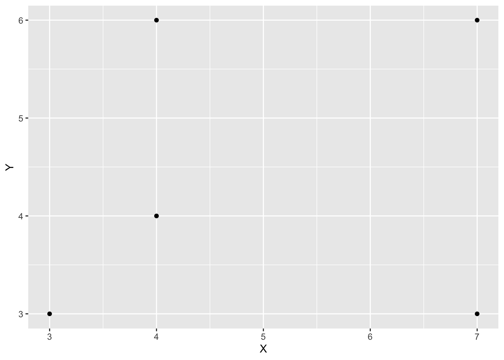
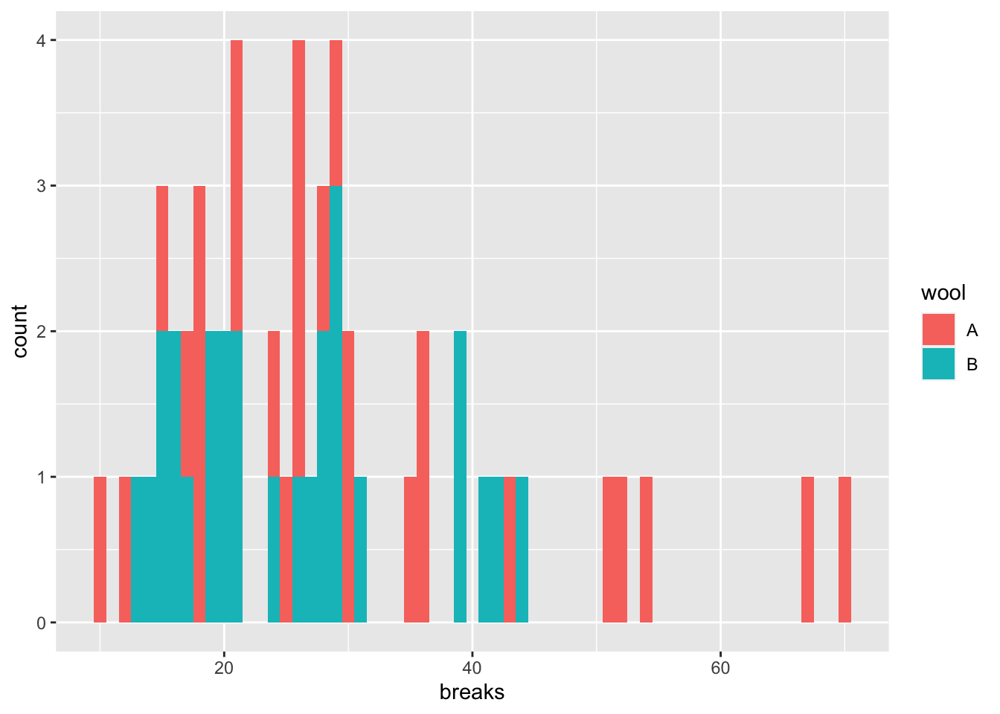
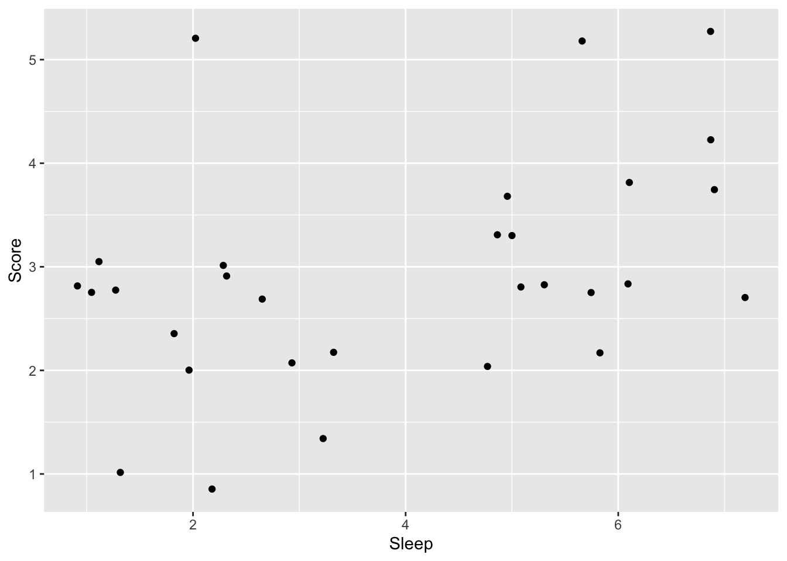

Chapter 12 その他のカウントデータの解析
前の章で，カウントデータの解析としてポアソン回帰を扱った。この章では，その他のカウントデータの解析法について説明する。
- 負の二項回帰（過分散対策）
- 順序ロジスティック回帰
- 多項ロジスティック回帰
12.1 準備
tidyverseパッケージに加え，MASS，nnetパッケージを使う。
MASSパッケージは負の二項分布を用いたモデルのときに，nnetパッケージは多項ロジスティック回帰のときに必要になる。初めて使う際には，事前にインストールが必要になる。
12.2 負の二項回帰
応答変数がカウントデータの場合，ポアソン回帰で分析する方法を前の章で学んだ。しかし，実際のデータは分散が平均よりも大きい場合が多く，平均と分散が等しい確率分布であるポアソン分布を用いると予測変数の効果を誤って判断してしまう恐れがある。これが，過分散（overdispersion）の問題である。
過分散対策として，応答変数が従う分布をポアソン分布ではなく，負の二項分布(negative binomial distribution)を用いる方法がよく使われる。
12.2.1 負の二項分布
例えばコインを投げて表が出る確率を0.5として，3回表が出るまで投げようと決めたとする。8回投げたところで3回出た場合，表が3回出る確率は以下から求めることができる。
## [1] 0.08203125これを一般化した式が以下である。成功確率を\(q\)として，\(r\)回成功するまでに試行が\(x\)回かかる確率を表した確率分布が，負の二項分布である。
\[ P(x) = {}_{x-1}\mathrm{C}_{r-1} q^{r}(1-q)^{x-r} \] 失敗回数を\(y\)として，以下のように置き換えることもできる(\(x=y+r\)を代入する)。\(x\)回目までに\(r\)回ある事象が生じる確率と言い換えることができる。
\[ P(y) = {}_{y+r-1}\mathrm{C}_{r-1} q^{r}(1-q)^{y} \]
Rでもnbinomで負の二項分布の確率を計算することができる。
x = 0:10
p_y = dbinom(x = x, size = 10 - 3, prob = 0.5)
d_plot = data.frame(x = x, p_y = p_y)
ggplot() +
geom_bar(data = d_plot, aes(x = x, y = p_y), stat = "identity") +
labs(x = "number of trials", y = "probability", title = "number of success = 3")
負の二項分布の期待値を\(E(x)=\mu\)とすると，分散は\(Var(x)=\mu + \mu^{2}/r\)で，分散が期待値（平均）よりも\(\mu^{2}/r\)大きい。負の二項分布によって，分散が平均よりも大きい分布を扱うことができる。
12.2.2 Rでの負の二項回帰
Rでは，MASSパッケージに含まれているglm.nb()関数で，負の二項回帰を扱うことができる。Rに入っているwarpbreaksをサンプルデータとして，ポアソン回帰と負の二項回帰の結果を比較してみよう。
## breaks wool tension A
## 1 26 A L 1
## 2 30 A L 1
## 3 54 A L 1
## 4 25 A L 1
## 5 70 A L 1
## 6 52 A L 1
breaksに対するwool(A or B)の効果を検討する。まずは，ポアソン回帰の結果を見てみる。breaksを\(y\)，Aを\(x\)とすると，モデルは以下のように表現できる。
$$
= + x\
y Poisson()
$$
##
## Call:
## glm(formula = breaks ~ A, family = poisson(link = "log"), data = d)
##
## Deviance Residuals:
## Min 1Q Median 3Q Max
## -4.4071 -1.9148 -0.7138 0.8332 5.9948
##
## Coefficients:
## Estimate Std. Error z value Pr(>|z|)
## (Intercept) 3.22919 0.03829 84.331 < 2e-16 ***
## A 0.20599 0.05157 3.994 6.49e-05 ***
## ---
## Signif. codes: 0 '***' 0.001 '**' 0.01 '*' 0.05 '.' 0.1 ' ' 1
##
## (Dispersion parameter for poisson family taken to be 1)
##
## Null deviance: 297.37 on 53 degrees of freedom
## Residual deviance: 281.33 on 52 degrees of freedom
## AIC: 560
##
## Number of Fisher Scoring iterations: 4## [1] 28.14815## [1] 174.2041Aに係る傾きの推定値について，かなり小さいp値が推定されている。
次に，負の二項回帰の結果と比較してみよう。
\[ \mu = \alpha + \beta x\\ y \sim NegativeBinom(\mu, r) \]
MASSパッケージのglm.nb()を使う。
model_nb = MASS::glm.nb(data = d, breaks ~ A) #lm関数と同じ要領で，線形の式を入力する。確率分布はオプションで指定しないで良い。
summary(model_nb)##
## Call:
## MASS::glm.nb(formula = breaks ~ A, data = d, init.theta = 6.960797279,
## link = log)
##
## Deviance Residuals:
## Min 1Q Median 3Q Max
## -2.1703 -0.8631 -0.3242 0.3561 2.2872
##
## Coefficients:
## Estimate Std. Error z value Pr(>|z|)
## (Intercept) 3.22919 0.08238 39.197 <2e-16 ***
## A 0.20599 0.11533 1.786 0.0741 .
## ---
## Signif. codes: 0 '***' 0.001 '**' 0.01 '*' 0.05 '.' 0.1 ' ' 1
##
## (Dispersion parameter for Negative Binomial(6.9608) family taken to be 1)
##
## Null deviance: 57.400 on 53 degrees of freedom
## Residual deviance: 54.212 on 52 degrees of freedom
## AIC: 419.97
##
## Number of Fisher Scoring iterations: 1
##
##
## Theta: 6.96
## Std. Err.: 1.63
##
## 2 x log-likelihood: -413.975ポアソン回帰と比べるとAのp値が大きくなり，過分散が解消されたことがうかがえる。
12.3 順序ロジスティック回帰
「優，良，可」といった成績や「1=当てはまらない，…, 5 = 当てはまる」といったリッカート尺度といった順序変数はカテゴリカル変数であるので，正規分布に従う前提を置くなど，量的変数のように扱うのは本来は適切といえない。二値のカテゴリカル変数の場合は二項分布を用いるロジスティック回帰で検討できたが，3つ以上のカテゴリを持つ変数の場合はどうすればよいか？
応答変数が順序変数の場合は，順序ロジスティック回帰(ordred logistic regression)が使われる。
12.3.1 例題
例えば，Scoreを試験の成績を意味する順序変数として「1=不可，2=可，3=良，4=優，5=秀」の値を取るとする。この成績Scoreに対して，試験前日の睡眠時間Sleepが及ぼす影響を検討するとしよう。
###サンプルデータの作成
Sleep = c(6,1,5,2,5,6,2,6,2,5,6,2,5,3,5,3,3,7,2,7,6,1,2,1,7,1,1,7,5,3)
Score = c(3,3,3,2,3,3,5,5,2,2,2,3,4,1,3,2,3,5,1,4,4,3,3,3,4,1,3,3,3,2)
sample_ordered = data.frame(Score = Score, Sleep = Sleep)
head(sample_ordered)## Score Sleep
## 1 3 6
## 2 3 1
## 3 3 5
## 4 2 2
## 5 3 5
## 6 3 6
12.3.2 順序ロジスティック回帰モデルの詳細
累積確率と累積ロジット
順序のあるカテゴリカル変数を扱う場合には，累積確率（cumulative probability）で各変数が生じる確率を表現する。累積確率とは，順序変数のある値以下が生じる確率のことをいう。例えば，\(y\)が\(k\)以下の値を取る累積確率を\(Pr(y≤k)\)と表現する。\(Pr(y≤3)\)は，\(y\)が1, 2, 3のいずれかが生じる確率を意味する。 カテゴリ\(k\)が生じる確率\(p_{k}\)とすると，\(p_{3}\)は累積確率\(Pr(y≤3)\)から累積確率\(Pr(y≤2)\)を引けば求められる。
つまり，\(p_{k}\)は以下の式で表現することができる。
\[ p_{k}=Pr(y≤k)−Pr(y≤k−1) \]
なお，カテゴリの最大値が出る確率は，全体の確率から引けば求まる。例えば，\(p_{5}\)は全体から累積確率\(Pr(y≤5)-Pr(y≤4)\)を計算しなくとも，\(1-Pr(y≤5)\)で求まる。
線形予測子との関係
カテゴリ\(k\)が得られる累積確率\(Pr(y ≤ k)\)は，K-1個の切片\(\alpha_{k}\)で示すことができる。\(\alpha_{k}\)は累積確率を区切るポイントを意味し，カットポイント(cutpoint)とも呼ばれる。
\[ Pr(y≤k) = \frac{\exp(\alpha_{k})}{1+\exp(\alpha_{k})} \]
更に，予測変数の効果（傾き）を考慮すると，累積確率は以下のように表現できる。
\[ \eta = \beta x\\ Pr(y ≤ k) = \frac{\exp(\alpha_{k} - \eta)}{1+\exp(\alpha_{k} - \eta)} \]
以下のように書き換えることもできる（左辺が累積確率の対数オッズ，右辺が線形の式）。
\[ \eta = \beta x\\ \log\frac{Pr(y ≤ k)}{Pr(y > k)} = \alpha_{k} - \eta \]
各切片から傾きの効果を引いているところに注意する必要がある。引くことによって，予測変数の値が大きいほど，累積確率の値が低くなる。言い換えれば，\(Pr(y>k)\)が大きくなる。つまり，予測変数の値が大きくなるほど，より大きい値のカテゴリが生じる確率が大きくなることを表現できる。
このように，各カテゴリについての累積確率を推定する切片\(\alpha_{k}\)と傾き\(\beta\)を推定する。
12.3.3 Rでの順序ロジスティック回帰
Rで順序ロジスティック回帰を行うには，外部パッケージの関数を利用する。以下では，MASSパッケージに含まれているpolr関数を使った例を示す。
準備
解析の前に，Rで順序尺度を扱う場合は，変数を順序付きの因子型(factor)変数にする必要がある。factor()もしくはordered()のいずれかの方法で作成する。
解析
応答変数を順序付きの因子型変数に変更したら，MASSパッケージに含まれているpolr()で解析する。lm()と同じ要領で，応答変数~予測変数のモデルを書けば結果を出力してくれる。
## Call:
## MASS::polr(formula = Score ~ Sleep, data = sample_ordered, Hess = TRUE)
##
## Coefficients:
## Value Std. Error t value
## Sleep 0.4423 0.1827 2.421
##
## Intercepts:
## Value Std. Error t value
## 1|2 -0.7336 0.8376 -0.8759
## 2|3 0.7129 0.7439 0.9583
## 3|4 3.1642 0.9920 3.1898
## 4|5 4.3135 1.1377 3.7912
##
## Residual Deviance: 77.8098
## AIC: 87.8098解釈
Coefficientsに予測変数に係る傾きの係数の推定値が出力されている。傾きの解釈は，一般化線形モデルのときと同じである（累積確率の対数オッズの変化量：要は係数がプラスならば高順位のカテゴリの確率を上昇させる効果を持つと解釈すれば良い）。Interceptsに出力されているのは，各切片（カットポイント）の推定値である。
polr()ではp値を出力してくれないので，求めたい場合は自分で計算する必要がある。t値を元に，以下のプログラムで計算する。
coef_table = coef(summary(model_polr))
p = pnorm(abs(coef_table[,"t value"]), lower.tail = FALSE)*2
(cbind(coef_table, "p value" = p))## Value Std. Error t value p value
## Sleep 0.4422630 0.1826583 2.4212592 0.0154668454
## 1|2 -0.7336097 0.8375601 -0.8758889 0.3810904074
## 2|3 0.7128649 0.7438511 0.9583436 0.3378895270
## 3|4 3.1642295 0.9919730 3.1898342 0.0014235442
## 4|5 4.3134558 1.1377486 3.7912207 0.000149908712.4 多項ロジスティック回帰
応答変数が3つ以上のカテゴリの名義尺度（順序関係がない）場合は，多項ロジスティック回帰(multinomial logistic regression)が適切である。
例題
高校生が進学先（大学の学部）を選択する場合を例として考える。学部の種類（文学部，経済学部，理学部など）には順序関係はない。性別，高校のときの成績が学科選択に及ぼす影響を検討する。
###サンプルデータの作成
set.seed(1)
Male = c(rep(0:1, 25))
Grade = rnorm(n=50, 5, 2)
Faculty = c(rep("Literature", 15), rep("Economics", 20), rep("Physical", 15))
sample_mnl = data.frame(Faculty = Faculty, Male = Male, Grade = Grade)
head(sample_mnl)## Faculty Male Grade
## 1 Literature 0 3.747092
## 2 Literature 1 5.367287
## 3 Literature 0 3.328743
## 4 Literature 1 8.190562
## 5 Literature 0 5.659016
## 6 Literature 1 3.359063Maleは性別（男=1, 女=0），Gradeは高校の時の成績，Facultyは志望学部を意味する変数とする。Facultyには，Literature（文学部），Economics（経済学部），Physical（理学部）の3種類のカテゴリがあるとする。
12.4.1 多項ロジスティック回帰モデルの詳細
多項ロジスティック回帰では基準となるカテゴリを設定し，基準カテゴリと比べて各カテゴリが生じやすいかを推定する複数のモデルを設定する。
例えば，例題で経済学部(Economics)を基準カテゴリとし，他のカテゴリ(Literature, Physical)が生じる確率を線形の式で表した例を以下に示す。
\[ \log\frac{Pr(Literature)}{Pr(Economics)}= \alpha_{1} + \beta_{1,1} Male + \beta_{2,1} Grade \\ \log\frac{Pr(Physical)}{Pr(Economics)}= \alpha_{2} + \beta_{1,2} Male + \beta_{2,2} Grade \\ \]
多項ロジスティック回帰では，カテゴリごとに異なる切片と傾きの値を推定する。
12.4.2 Rでの多項ロジスティック回帰
多項ロジスティック回帰を行うことのできるパッケージとして，nnetパッケージのmultinom()関数がある。lm()と同じ要領でモデルを記述すると，推定結果を出力してくれる。
## # weights: 12 (6 variable)
## initial value 54.930614
## final value 54.309165
## converged## Call:
## nnet::multinom(formula = Faculty ~ Male + Grade, data = sample_mnl)
##
## Coefficients:
## (Intercept) Male Grade
## Literature -0.3637660 -0.1228603 0.02625298
## Physical -0.7764841 0.1628974 0.07759005
##
## Std. Errors:
## (Intercept) Male Grade
## Literature 1.214153 0.6892241 0.2085267
## Physical 1.243610 0.6894528 0.2104109
##
## Residual Deviance: 108.6183
## AIC: 120.6183Coeffficientsの部分に，係数の推定結果が出力される。このモデルではEconomicsを基準カテゴリとなっている（デフォルトで，アルファベット順で一番はじめの変数が基準となる）。Literatureの部分に出力されるのが上の式でいう\(\alpha_{1}\), \(\beta_{1, 1}\), \(\beta_{2, 1}\)に，Physicalの部分に出力されるのが\(\alpha_{2}\), \(\beta_{1, 2}\), \(\beta_{2, 2}\)に当たる。
Literatureの予測変数の傾きの推定値は，基準カテゴリ（Economics）と比べてのその予測変数の効果をイミシル（その予測変数が1単位変化したときのLiteratureとEconomicsの対数オッズの変化量）。
このように，多項ロジスティック回帰の係数はある基準カテゴリと比較した上での効果を意味するため，解釈は複雑になる。
multinom()ではp値を出力してくれないので，求めたい場合は自分で計算する必要がある。以下には，z scoreを元に計算する方法を示す。
#p値の出力
z = summary(result_mnl)$coefficients/summary(result_mnl)$standard.errors
p = (1 - pnorm(abs(z), mean = 0, sd = 1)) * 2
p## (Intercept) Male Grade
## Literature 0.7644787 0.8585197 0.8998131
## Physical 0.5323786 0.8132228 0.7123104## ゼロ過剰ポアソン回帰
### 例題
### Rでのゼロ過剰ポアソン回帰
#`pscl`パッケージの`zeroinfl()`関数で解析することができる。`lm()`と同じ要領でモデルを記述すると，推定結果を出力してくれる。
head(bioChemists)
ggplot() +
geom_histogram(data = bioChemists, aes(x=art), binwidth = 1, fill="white", color="black")
table(bioChemists$art)
model_zeroinfl = pscl::zeroinfl(data = bioChemists, art ~ fem + mar + kid5 + phd + ment)
summary(model_zeroinfl)#確認問題
#MASSのhousingを使う
str(housing)
d = housing
d$ID = 1:nrow(d)
mean(d$Freq)
var(d$Freq)
ggplot() +
geom_histogram(data = d, aes(x = Freq), binwidth = 1)
summary(glm(data = d, Freq ~ Cont, family = poisson(link = "log")))
summary(glm.nb(data = d, Freq ~ Cont))
summary(glmer(data = d, Freq ~ Cont + (1|ID), family=poisson))